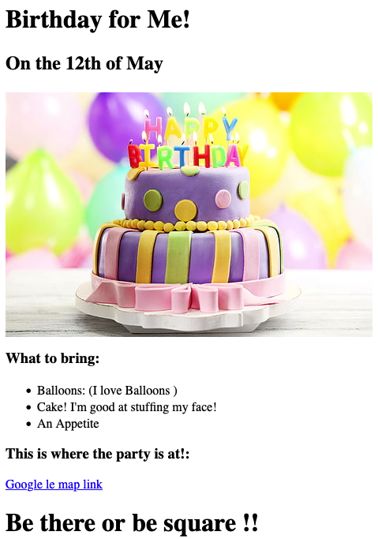

<!-- TODO 1: Create the HTML Boilerplate -->
<!DOCTYPE html>
<header>
    <title>As good as any</title>
    <sometag what="Could be anything"> </sometag>
    <meta charset="UTF-8">
    <meta name="Description" content="Stuff made here, nerds R us, Everything required for Nerddom, Yakitty Yak">
    <meta name="viewport" content="width=device-width, initial-scale=1.0"
    
</header>
<body>

<!-- TODO 2: Add Your previous projects' HTML into the public folder -->
<!-- Check: Mine are called : Birthday-index.html 
& Movie-rank-index.html -->
<!-- TODO 3: Take screenshots of your project previews and add the images to the images folder -->
<!-- Check Leventquisouffl...movie.png & MyBirth...png -->
<!-- TODO 4: Add titles/subtitles etc. -->
<h1>Otosan tsukuta ue bu sai to </h1>
<h2>Chi Chi ha ue bu tsukuru sha ni narimasu </h2>
Hontou da yo
<hr />
<h3><a href="./public/movie-rank-index.html"> Le vent souffle </a><br />A website about Great movies</h3>
<a href="./public/movie-rank-index.html"></a>
<p>
    <h3><a href="./public/Birthday-index.html"> Bon anniversaire !</a>
        <br />
         <br/> 
         C'est ton annive Toutou le minou!
    </h3>
<a href="./public/Birthday-index.html"></a>
</p>
<hr />
<a href="./public/about.html">A link about me</a>
<a href="./public/contact.html">Get in touch</a>
<!-- TODO 5: Add a link to the project pages -->
<!-- done for the fave films ... Doing fro the b'day site-->

<!-- TODO 6: Add images to show the project previews
HINT for TODO 6: You can use the height attribute set to 200 to make the image smaller:
https://developer.mozilla.org/en-US/docs/Web/HTML/Element/img#attr-height -->

<!-- TODO 7: Add the Contact Me and About Me page links -->
</body>
<footer>
    Some Stuff Made Here
</footer>